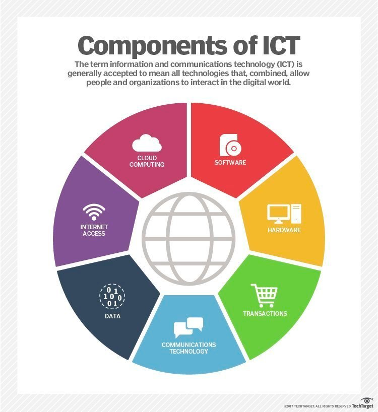

What is ICT?
Information and Communication Technology (ICT) refers to the integration of telecommunications, computers, and necessary hardware, software, and systems to process, store, and exchange data. ICT is an umbrella term that encompasses various communication technologies, such as the internet, wireless networks, mobile devices, and other forms of communication infrastructure.

The Evolution and History of ICT
The history of ICT dates back to the early days of human communication. From the development of the telegraph in the 19th century to the invention of the personal computer in the 1970s, ICT has played a significant role in shaping modern society. The convergence of computing, telecommunications, and broadcasting technologies in the 20th century led to the rapid expansion of the internet, transforming how individuals, businesses, and governments communicate and operate.

Components of ICT
ICT is composed of several components that work together to facilitate data exchange and communication:
- Hardware: Physical devices such as computers, servers, networking equipment, and mobile devices.
- Software: Operating systems, applications, and software tools used for processing data and performing tasks.
- Telecommunications: Technologies that enable data transmission, including wireless networks, fiber optics, and satellite communications.
- Data: The core element of ICT, representing the information being processed, stored, or transmitted.

The Impact of ICT on Society
The rise of ICT has had a profound impact on society. From the growth of e-commerce and digital communication platforms to the development of smart cities, ICT has revolutionized the way people interact, work, and live. It has fostered globalization, increased access to education and healthcare, and facilitated the creation of new industries, jobs, and business opportunities.

Challenges and Future of ICT
Despite the many advancements, ICT faces several challenges, including cybersecurity threats, data privacy concerns, and the digital divide between developed and developing countries. As technology continues to evolve, it is essential to address these challenges while ensuring equitable access to ICT resources for all individuals worldwide.